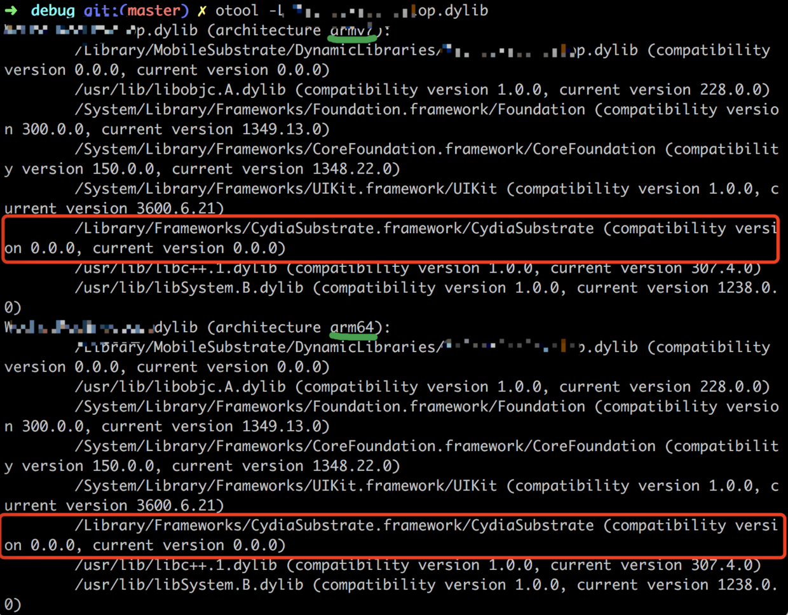
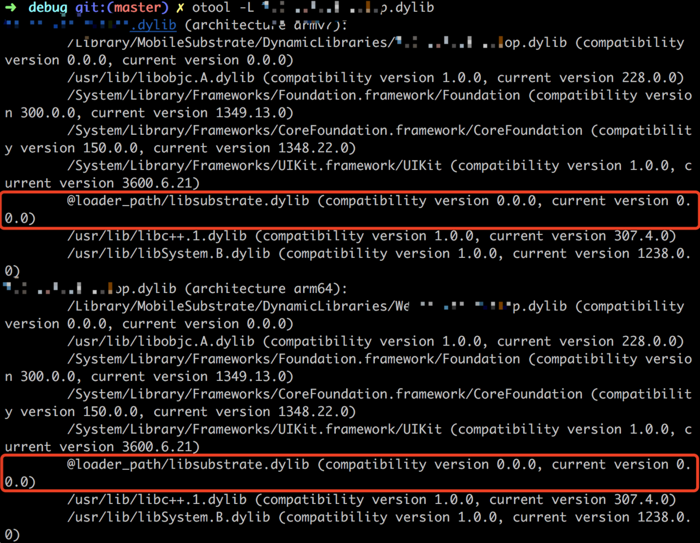
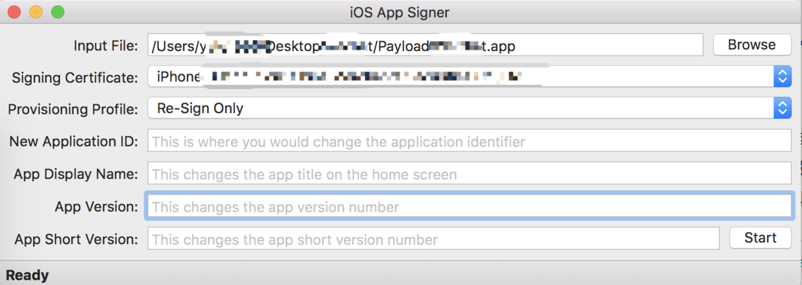

本文记录了如何在iOS上使用tweak工具对应用进行hook，注入并重新打包应用的过程。
对于已越狱的设备，系统默认安装了mobilesubstrate动态库，提供一个系统级的入侵管道，所有的tweak都可以依赖它来进行开发。而对于没有越狱的手机，我们需要向目标app注入libsubstrate.dylib动态库，才能使程序在运行时加载我们编写的动态库。
环境准备：
- ios-app-signer：应用签名打包工具(可选)
- class-dump：头文件导出工具
-
1
sudo clone git://github.com/DHowett/theos.git /opt/theos
libsubstrate.dylib下载到/opt/theos/lib/
ldid签名工具下载到/opt/theos/bin/
1
sudo chmod 777 /opt/theos/bin/ldid
配置dpkg-deb下载dm.pl，重命名为dpkg-deb后，放到/opt/theos/bin/
1
sudo chmod 777 /opt/theos/bin/dpkg-deb
编译安装 optool 工具，下载之后需要修改项目Build Setting中Base SDK项为当前系统sdk，否则可能编译报错：
1 | # 因为 optool 添加了 submodule，因为需要使用 --recuresive 选项，将子模块全部 clone 下来 |
实现部分：
1. 在tweak工程目录下编译代码，生成目标库：
1 | make |
可以在./.theos/obj/debug下找到生成的目标库xxx.dylib
2.修改目标库依赖文件的相对地址：
otool -L xxx.dylib

查看动态库的依赖库，图中可以看到两个架构的依赖库，其中大部分都是系统库，只有一个需要我们注入的库。由于
1 | /Library/Frameworks/CydiaSubstrate.framework/CydiaSubstrate |
在实际设备上没有对应的文件，我们需要修改其地址为相对地址：
1 | install_name_tool -change /Library/Frameworks/CydiaSubstrate.framework/CydiaSubstrate @loader_path/libsubstrate.dylib xxx.dylib |
如果系统显示的是/usr/lib/libsubstrate.dylib而不是/Library/Frameworks/CydiaSubstrate.framework/CydiaSubstrate的话，使用以下命令：(命令中只有依赖地址不同，@loader_path指明相对地址。)
1 | install_name_tool -change/usr/lib/libsubstrate.dylib @loader_path/libsubstrate.dylib xxx.dylib |
完成之后我们再次查看依赖库：

可以看到，依赖库加载地址已经成功被修改
3.注入xxx.dylib到目标应用中
拷贝libsubstrate.dylib和我们编写的库xxx.dylib到需要hook的应用的zzz.app目录下，修改应用目录下二进制文件的zzz的Load Commands段：
1 | optool install -c load -p "@executable_path/xxx.dylib" -t ./zzz |
4.重签名和打包应用：
codesign -f -s ‘iPhone Developer: xxx(xxx)’ —entitlements xxx.entitlements zzz.app
此处也可以简单的使用工具一步完成ios-app-signer生成ipa
